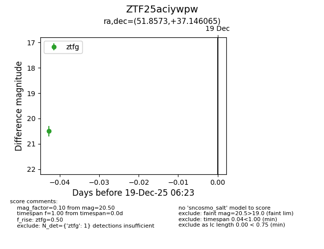
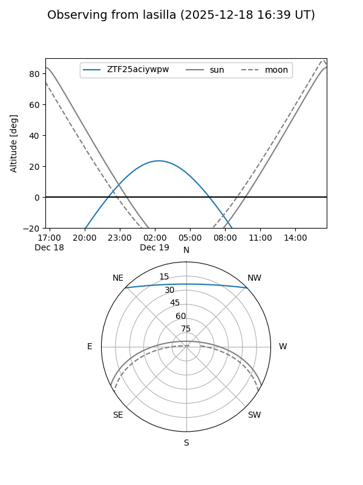
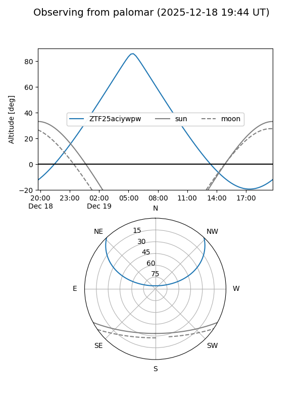

ZTF25aciywpw
Target ZTF25aciywpw at 2025-12-19 06:24
Aliases and brokers:
FINK: fink-portal.org/ZTF25aciywpw
Lasair: lasair-ztf.lsst.ac.uk/objects/ZTF25aciywpw
ALeRCE: alerce.online/object/ZTF25aciywpw
alt names
ZTF25aciywpw (ztf,fink_ztf)
Coordinates:
equatorial (ra, dec) = 51.8573,+37.14606
equatorial (HMS+DMS) = 03:27:25.75,+37:08:45.83
galactic (l, b) = (154.3901,-16.02076)
Flags:
Photometry:
last ztfg=20.50
1 ztfg detections
Lightcurve

Visibility


Additional plots